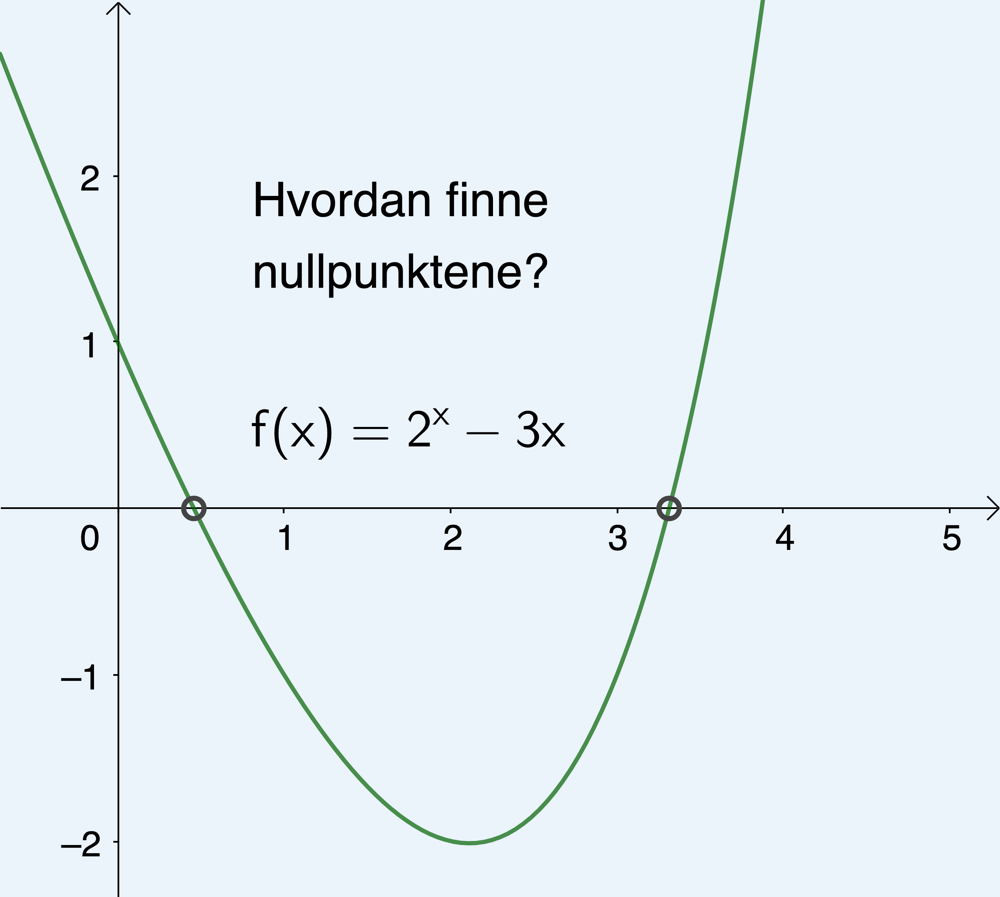
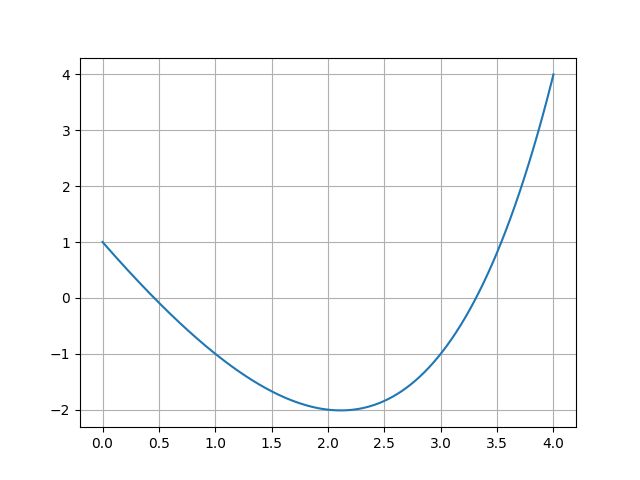
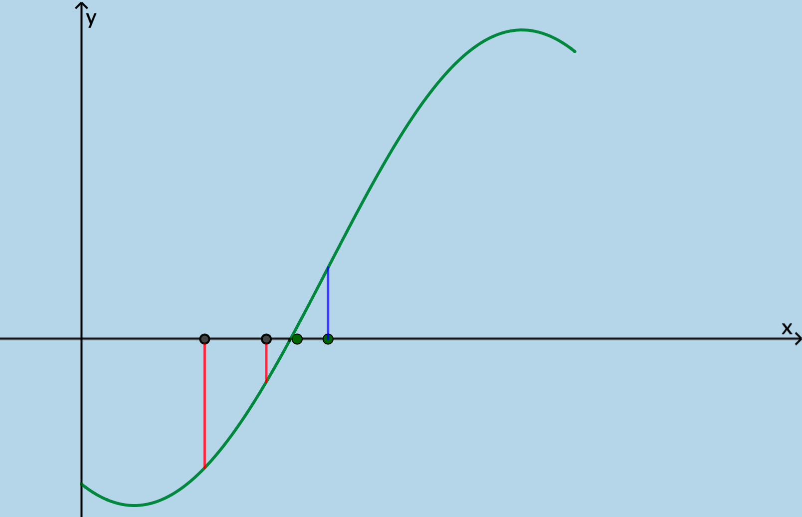

Nummerisk løsning av likninger med Python
Contents
Nummerisk løsning av likninger med Python¶
De fleste likninger kan være vanskelige å løse algebraisk. Her skal du lære hvordan du kan løse slike ved å bruke numeriske metoder.
Du skal kunne
forstå en algoritme som finner nullpunktene til en funksjon i et gitt intervall
lage et program som utfører algoritmen
kunne formatere svaret på en fornuftig måte
forstå hvordan halveringsmetoden virker
kunne lage et program som gjennomfører denne
vurdere hvordan du kan tilpasse algoritmen slik at du får kontroll * på antall riktige desimaler i svaret.

Introduksjon til numerisk løsning av likninger¶
I filmen nedenfor viser vi hvorfor det er viktig å kunne løse likninger numerisk. Vi viser hvordan vi kan løse likningen
ved å bruke GeoGebra. Vi skal senere lage program i Python som gjør noe tilsvarende det som GeoGebra gjør.
Nummerisk løsning; vi finner et nullpunkt¶
I filmen nedenfor viser vi en enkel algoritme som finner et nullpunkt til en funksjon. Vi starter med en startverdi og sjekker funksjonsverdien i de ulike punkta. Vi vet at dersom grafen krysser x-aksen i et intervall, så må det være et nullpunkt i dette intervallet. Dette gjelder i hvert fall når grafen er sammenhengende.
I forrige film fant vi en løsning til likningen \(2^x-3x=0\). Vi fant at \(x\approx 0.458\). Vi brukte da følgende kode:
def f(x):
return 2**x-3*x
s = 0
while f(s)>0:
s = s + 0.001
print("Nullpunkter er x = ", s)

Vi har tegnet grafen til \(f(x)=2^x-3x\) ovenfor. Vi ser at likningen \(2^x-3x=0\) har to løsninger.
Oppgave 1
Gjør modifikasjoner av koden over og finn det andre nullpunktet. Skriv inn tallet med to desimalers nøyaktighet.
Vi finner nullpuntkene i et intervall¶
I filmen nedenfor finner vi de to nullpunktene til funksjonen \(f(x)=2^x+3^{-x}-3\) ved å bruke en numerisk algoritme.
I filmen på forrige side laget vi følgende program:
def f(x):
return 2**x+3**(-x)-3
start = -2
slutt = 2
x = start
d = 0.0001
while x+d < slutt:
if f(x)*f(x+d)<=0:
print("Nullpunkt i x=", x)
x = x + d
Oppgave 2
Nå skal du lage et tilsvarende program som finner nullpunktene til funksjonen \(g(x)=2^{-x^2+5}-1\) i intervallet \([-3, 3] \). Du kan lage programmet her:
Formatering av print-funksjonen¶
Når vi skal printe desimaltall, kan det være hensiktsmessig å kunne formatere tallet slik at vi får ønsket antall desimaler med. Når vi løste likningen \(2^x+3^{-x}-3=0\) fikk vi for eksempel at den ene løsningen var \(x=-0.8078000000001313\). En fin måte å gjøre dette på er å bruke det som kalles for f-strenger. Det vil si formaterte strenger. I filmen nedenfor viser vi hvordan vi kan gjøre dette.
Vi bruker f-strenger på følgende måte:
print(f"<Det vi vil printe>")
Mellom anførselstegnene kan du skrive vanlig tekst og du kan hente størrelsen til de ulike variablene du har laget i programmet. Har du for eksempel et en variabel a som er et desimaltall kan du formatere antall desimaler på følgende måte:
print(f"Her er a: {a:0.3f}")
Da vil vi få skrevet ut for eksempel «Her er a: 2.323» (om a for eksempel har verdien 2.323443434342).
Prøv selv nedenfor. Se om du kan skrive ut tallet π med 5 desimaler. Husk at må importere π. Det kan du gjøre ved å skrive
from math import pi
Vi har jobbet med to algoritmer som løser likninger nummerisk. Begge algoritmene søkte etter x-verdier der funksjonsverdien skifter fortegn. Vi brukte at en funksjon \(f\) har ulikt fortegn i to punkt \(a\) og \( b\) dersom
Dersom dette gjelder (eller vi får lik 0), så vet vi at det er et nullpunkt i intervallet \([a, b] \). Dette gjelder dersom grafen til \( f\) er sammenhengende.
Vi har også sett at vi kan formatere print ved å bruke f-formatering. Her er et eksempel på en slik formatering:
print(f"Løsningen er x= {x}")
Vi kan også gjøre utregninger inne i krøllparentesene:
a = 2
b = 3
print(f"Summen av {a} og {b} er {a+b}")
 Aktivitet
Før vi skal programmere i Python, har vi en oppgave til deg.
Vi har valgt et tall mellom 1 og 100. Kan du gjette hvilket tall det er? Hvor mange forsøk trenger du?
Kan du forklare hvorfor du alltid kan klare å komme fram til riktig tall etter høyst 7 forsøk?
Halveringsmetoden¶
I filmen nedenfor viser vi prinsippene bak det som vi kaller for halveringsmetoden.
I filmen nedenfor viser vi hvordan vi kan komme fram til en algoritme for løsing av likninger ved å bruke halveringsmetoden. Vi skal komme fram til det som vi kaller for en pseudokode. Dette er en presis oppskrift som forteller hva vi vil gjøre i algoritmen, skrevet i et språk som er uavhengig av hvilket programmeringsspråk vi bruker. Senere skal vi programmere algoritmen med Python.
Halveringsmetoden
Vi ønsker å finne et nullpunkt til en funksjon \(f\) i intervallet \([a , b]\).
Input: Funksjonen \(f\), tallene \(a\), \(b\) og antall ganger vi skal halvere \(n\)
Input: Funksjonen \(f\), tallene \(a\), \(b\) og antall ganger vi skal halvere \(n\)
Gjenta \(n\) ganger:\( m = \dfrac{a+b}{2} \)
Hvis \(f(a)\) og \(f(m)\) har ulikt fortegn, lar vi \(b=m\)
Ellers lar vi \( a = m \)
Da er \( m\) en god tilnærming for et nullpunkt til \(f\) i intervallet \( \left[a , b\right] \).
Før vi går videre vil vi at du forsøker å lage et program i Python der du bruker algoritmen ovenfor.
Oppgave 3
Lag et program som bruker algoritmen ovenfor til å løse likningen
Prøv først å finne nullpunktet som ligger mellom 1 og 2. Er det flere nullpunkt?
Du kan lage programmet her: